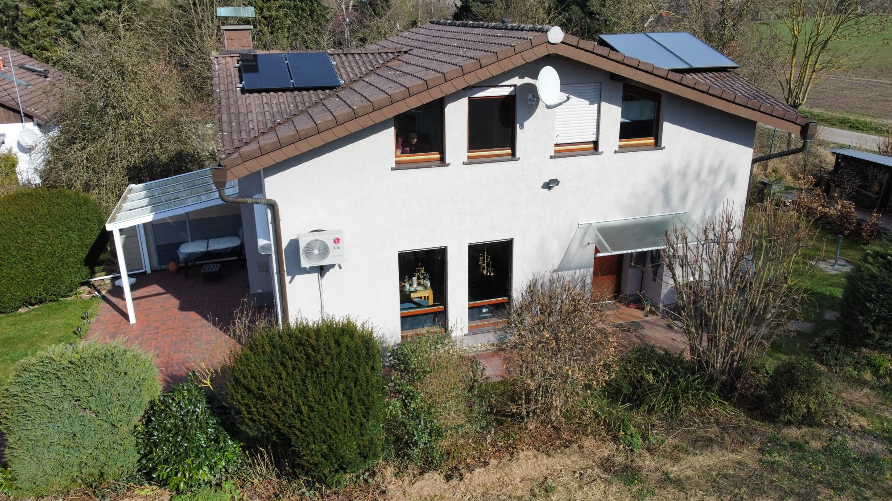
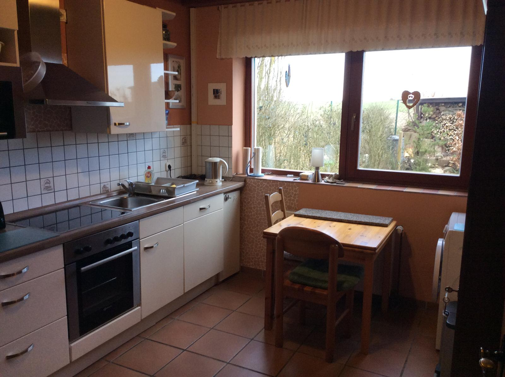
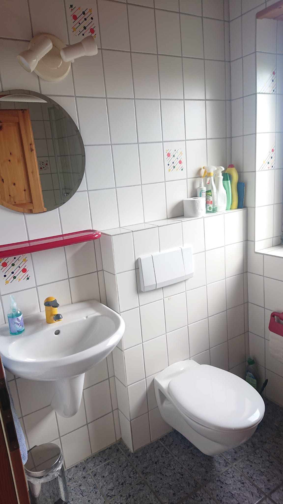
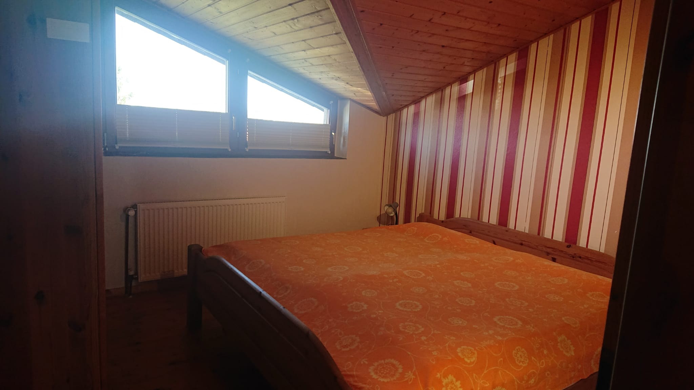
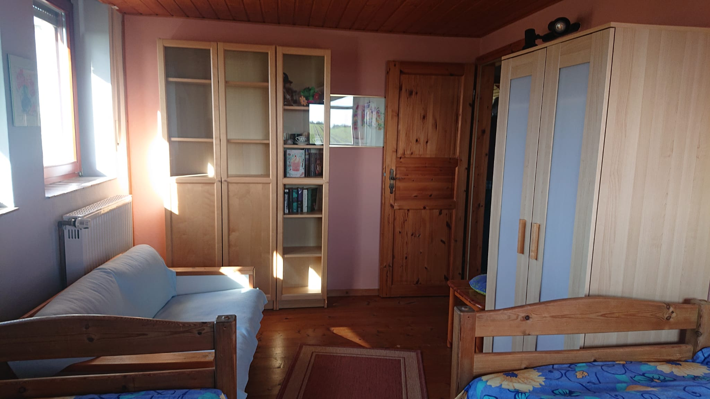
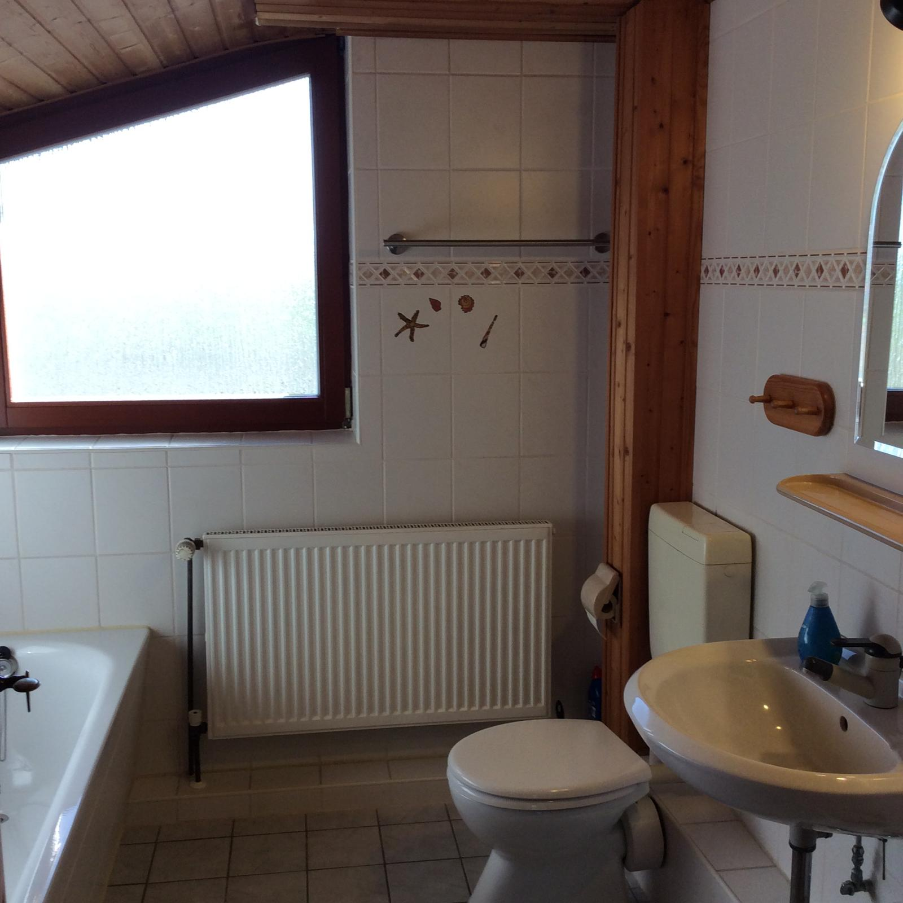

Das Haus
Das freistehende Ferienhaus liegt mitten im Grünen, in unverbauter Lage. In weniger als 10 Minuten erreicht man zu Fuß den See; in 15 Minuten die Sperrmauer. Zum Haus gehören 2 Freisitze: eine Terrasse (teilweise überdacht) zum Westen und eine Sitzmöglichkeit im Osten (Stühle, Bank und Sonnenschirm vorhanden).


EG
Das Wohnzimmer
Im Erdgeschoss befindet sich das geräumige Wohn- und Esszimmer. Am Esstisch können bequem 6 Personen Platz nehmen. Große Fenster sorgen für einen hellen Raum. Der Wohnraum ist mit SAT-TV und Stereoanlage ausgestattet. Eine halbgewendelte Treppe führt ins Obergeschoss.


Die Küche
Die nach Osten gelegene Küche ist mit allen notwendigen Geräten ausgestattet. Ein Umluftherd, eine Mikrowelle, eine Spülmaschine und eine Waschmaschine sorgen für Arbeitserleichterung.

Das Bad
Das Bad im Erdgeschoss verfügt über eine Dusche und ein WC.

OG
Schlafzimmer
Lage nach Westen. Vorhanden sind Doppelbetten, 2 Nachtkonsolen und ein geräumiger Kleiderschrank. Bettzeug ist für 6 Personen vorhanden, Bettwäsche ist i. d. R. mitzubringen. Ebenso Handtücher und Geschirrtücher. Wäsche ansonsten auf Anfrage.

Schlafzimmer 2
Lage Süd-Osten. Das Zimmer ist mit zwei Einzelbetten und einem Kleiderschrank ausgestattet.


Schlafzimmer 3
Lage nach Süd-Westen. Das Zimmer ist mit zwei Einzelbetten sowie einem Kleiderschrank möbliert.

Bad
Im Bad können Sie über eine Badewanne, ein Waschbecken und WC verfügen.
